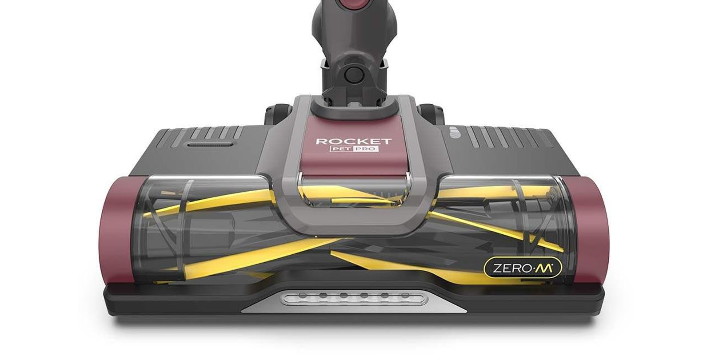
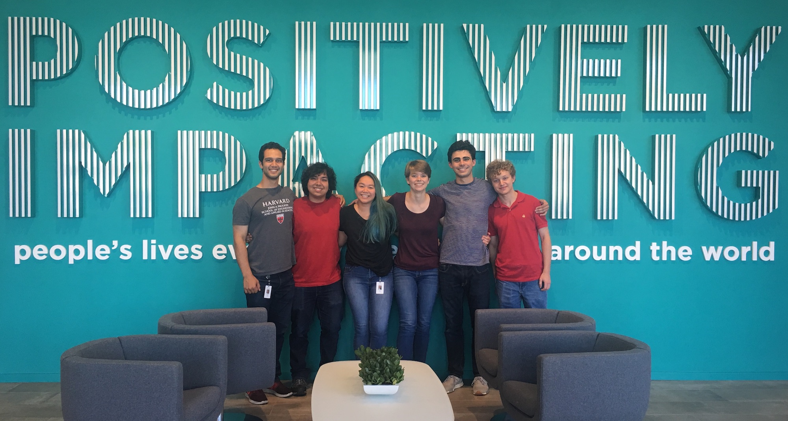

Home
SharkNinja Summer
In the summer of 2019, after my junior year of college, I did an internship with Boston-area-based home appliance company SharkNinja as a mechanical engineering intern on the Shark Advanced Development team. We developed cordless vacuum cleaner nozzles like the one on the Rocket Pet Pro.
A Rocket Pet Pro nozzle
A note on cordless vacuum nozzles
Cordless vaccums' biggest advantage—their cordless-ness—is a direct consequence of their biggest weakness—their batteries. A more powerful motor will suck harder and allow you to clean bigger and badder messes, but it requires more power. The more power your motor requires, the bigger your battery will need to be. The bigger your battery, the heavier your vacuum cleaner will be, and the worse your brand looks.
The power constraint is one huge reason why nozzles are so important to staying competitive in the cordless vacuum marketplace. When your power is limited by form factor and chemistry, you need to squeeze every last milligram of cleaning ability out of your machine by optimizing your nozzle.
Another reason why nozzles are so important is their ability market the entire product. If your nozzle looks like it can clean better, then people will be more likely to use it.

Shark's lineup of innovative brushroll technologies
Do you see those yellow and orange things on the nozzles above? Those are called brushrolls. They spin around at around 1000 revolutions per minute and help with cleaning by agitating carpets and lifting debris off floor surfaces. Instead of hiding them inside an opaque nozzle housing, Shark decided to aggressively mark their innovations in brushroll technology. They put transparent windows on their nozzles so you can see their inner workings and colored the brushes and flaps in bright oranges and yellows so they're more visible. The helix patterns have a functional purpose, moving debris in a more efficient path, but they also nicely draw attention to the movement of the brushrolls.
Lastly, the nozzle is where all the steering components are. There's that weird two degree-of-freedom joint at the back that allows you to steer the nozzle where you want just by twisting your wrist a little. The geometry of that joint combine with the geometry of the wheels has a massive effect on handling. A few inches' difference in wheel placement can mean a vacuum that won't turn or one that slides around like a hockey puck.
Vacuum cleaner nozzles are unbelievably complex, and I spent an entire summer working on them only to barely scratch the surface.
My work
While my work was probably closest to that of a test engineer, I was involved in a huge range of activities. Given a vacuum cleaning test procedure, I would design an experiment, draft required parts in CAD, 3D print them, Frankestein them onto an existing vacuum cleaner, and run an experiment. We varied all kinds of mechanical design factors to improve cleaning performance and handling.
Quick-and-dirty prototype to test the handling of a nozzle with rear omni-wheels. It felt terrible.
An adjustable caster ball I made from screw hardware to replace the front wheels on a Rocket Pet Pro nozzle. This also felt pretty bad.
Every factor was considered. We measured how well each nozzle cleaned from the front, from the sides, against walls, over tiles, on different kinds of carpets, and with different kinds of debris. We adjusted the types of brushes, bristles, and flaps on brushrolls, changing the durometers of rubbers and the shapes of the helix patterns. Heck, I weighed weighed an entire box of Cheerios one piece at a time as part of an experiment to determine the proportion of abnormally-large ones (fun fact: they weigh around 90 milligrams each).
Bare-Floor Engagement

One nozzle aspect that was important to us was how well the brushroll dug into carpets. If the bristles or flaps didn't dig into the carpet enough, the vacuum cleaner wouldn't be able to remove dirt effectively. If they dug in too deep, then it would be too hard to push the nozzle, and the brushroll might stall, damaging its motor.
I designed a measurement device and a piece of computer vision software to go along with it that allowed us to measure how far below the plane of the nozzle's wheels the tips of brushroll bristles descended. This distance, an estimate of how much the bristles would dig into carpets, was called bare-floor engagement.
For intellectual property reasons, I can't tell you exactly how the system worked. The physical device allowed an operator to create a kind of disturbance pattern on a surface that indicated where bristles had made contact with the surface, and the computer vision software used a cellphone photo of the disturbance pattern to estimate the bare-floor engagement.
Robot Week
I was loaned to the Shark Robot team for a week to document at-home testing and investigate pet hair evacuation in the new self-emptying model. Shark's robot vacuums look almost exactly like iRobot's Roombas, but don't tell SharkNinja I said that.

This comic just about sums up my two internships while in college
I was given the opportunity to oversee Shark Robot tests in real homes and identify bugs in the path planning algorithms. This was really cool because I had just taken an autonomous robotics course in college.
The pet hair evacuation project involved us cutting open the robots with an ultrasonic knife and replacing their top panels with clear material.
This allowed us to take high-speed video of artificial pet hair being sucked out of the robot's debris cup and into the self-empty base. This was a really cool study and an insanely fun thing to get paid to do
Takeaways
Vacuum cleaners are a deceptively challenging problem. My manager, Dan Der Marderosian , told me during my first week that vacuum cleaners would be the most physically complicated system that I could analyze short of jet engines or rockets, and I think he's right.
SharkNinja is wild. We were told on orientation day to take a shot every time we heard the term "fast-paced" used in the office. They describe themselves as a really big startup. They have five hundred employees in their Needham office, but ten percent of those were co-ops and interns while I was there. The ones that I worked with were given engineer-level responsibilities despite being juniors and sophomores in college. The product development and release cycle is less than a year from an idea in someone's head to a vacuum cleaner on sale at Home Depot. I ate easily a hundred dollars of free food testing out Ninja's indoor grills between meetings. I walked out of there with half a dozen free vacuum cleaners and an air fryer. The place is a fever dream, and I could not recommend doing an internship there enough.
From left to right: Me, Diego Garcia, Thien An Trinh, Kyle Bertram, Timothy Bilodeau, and Max Dietrich
I had a blast working with the other interns. My partner was the super talented Kyle Bertram, who was in charge of drivetrain at Olin College's Baja team and is an awesome teammate. Shoutout to the team above and to Lisa Sangree, Paul Adan, Max Lacoma, Adrian McCullough, Nathan Herrman, and everyone else who made that summer awesome.